Ahrefs citation data across 6 AEC software platforms. 4 of 6 companies have fewer than 2 total AI citations. AI Overviews and Grok account for 77% of citations. Zero companies have published llms.txt. What drives the gap and how to close it.
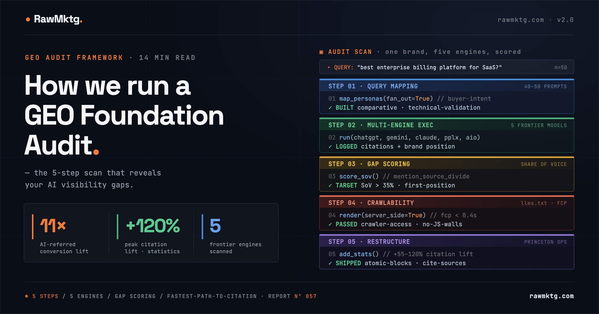
AI converts at 11x organic, but your analytics can't see it. The five-step diagnostic for mapping citation gaps: query mapping, multi-model execution, citation gap scoring, crawlability, and Princeton-validated content restructuring.
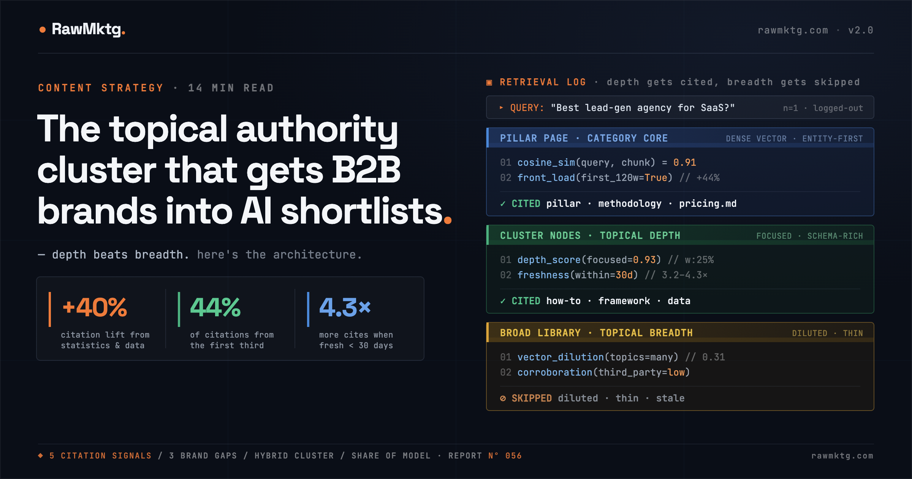
800M ChatGPT WAUs, +41% citation lift from statistics, 86% of citations from brand-managed sources. The hybrid cluster architecture, RAG pipeline mechanics, and Share of Model measurement framework.
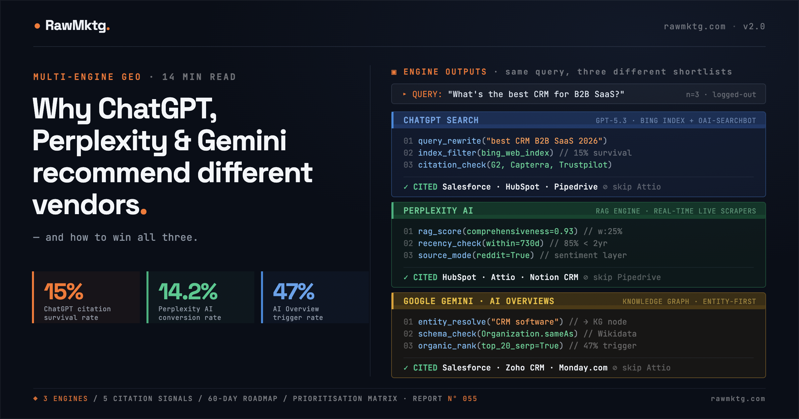
69% of B2B buyers use 3+ AI engines. ChatGPT uses Bing's top 15%, Perplexity scores on 5 real-time RAG factors, Gemini resolves entities before retrieving. Platform-specific tactics and a 60-day roadmap to win all three.

+41% citation lift from statistics. 54% fewer hallucinations with knowledge graphs. Schema.org @graph, /llms.txt, Answer Capsules, and Proof-Pairing Density: the framework that makes AI get your brand right.
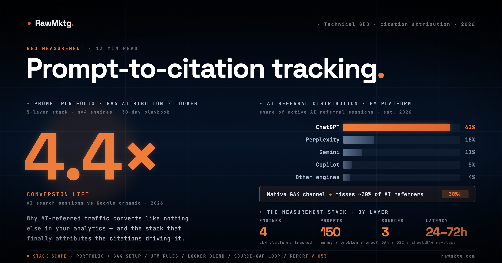
AI sessions convert at 4.4x organic. GA4 misses ~30% of AI referrers. A blueprint for the prompt portfolio, GA4 dual-setup, and Looker Studio dashboard that prove GEO ROI.
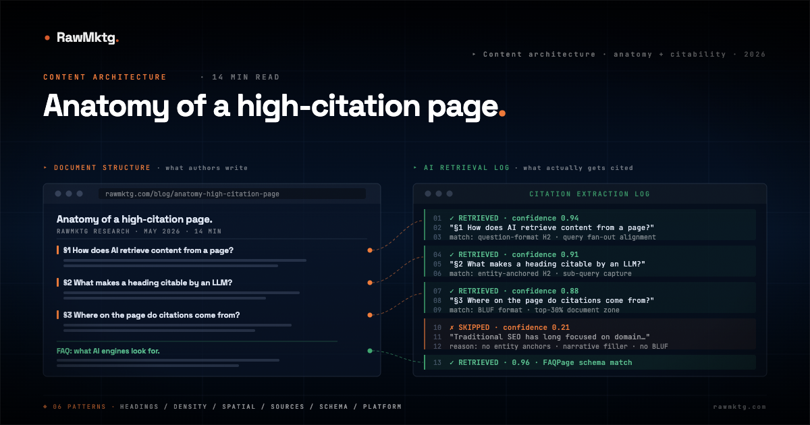
38% top-10 overlap. 55% of citations from the first 30% of the page. What heading structure, paragraph density, and answer-lead formatting actually look like on pages AI cites.

Unlinked mentions: r=0.664. Traditional backlinks: r=0.218. The five-gate citation gauntlet, platform profiles, and five-phase execution blueprint.
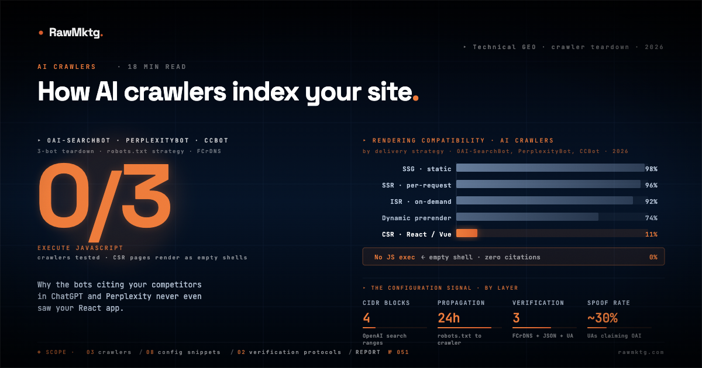
0 of 3 AI crawlers execute JavaScript. The breakdown of crawl logic, IP verification, and the robots.txt configuration that separates citation indexers from training harvesters.
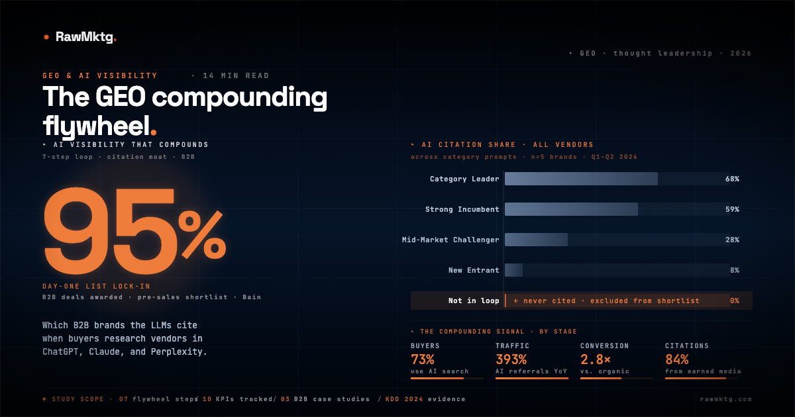
73% of B2B procurement managers use AI for vendor discovery. The seven-step loop that decides who gets cited, and why first-mover advantage compounds in AI search.
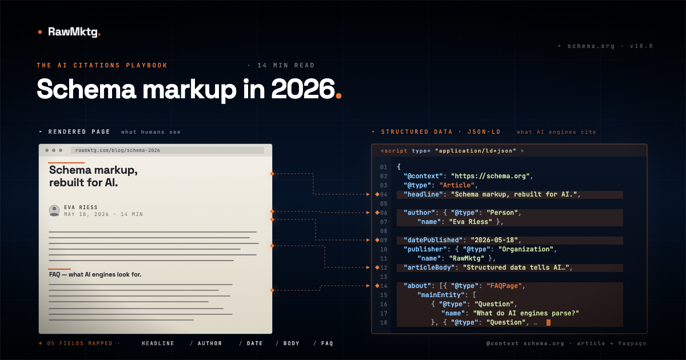
53% of AI-cited pages have valid schema. The @graph architecture, four core B2B schema types, and six-week implementation roadmap.
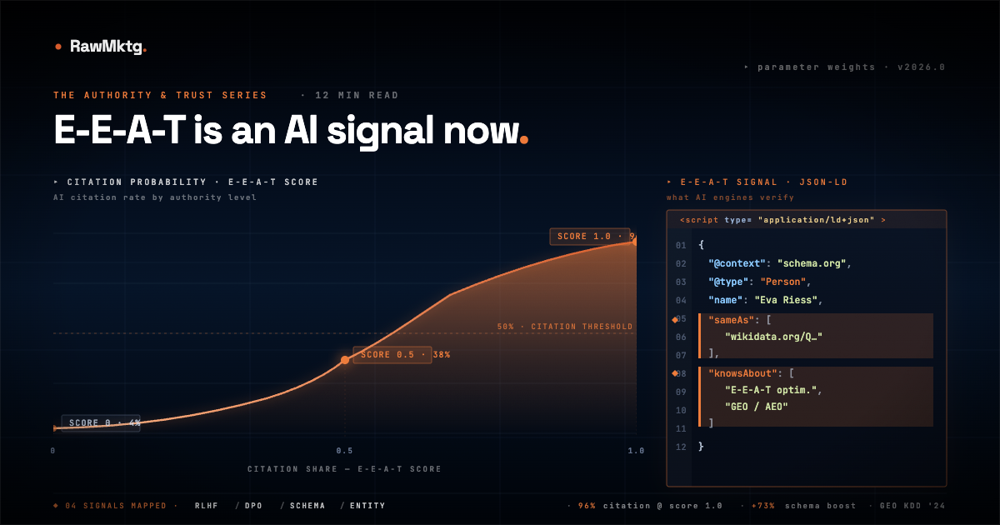
96% of AI Overview citations go to E-E-A-T-trusted sources. The technical reason why, how RLHF wired quality into LLMs, and the 90-day framework to close the gap.
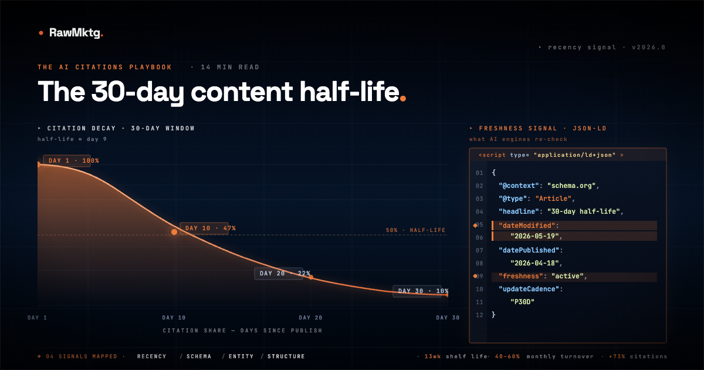
3.2x more likely to lose AI citations after 90 days. The technical reason why, platform-by-platform heuristics, and the refresh system to fix it.
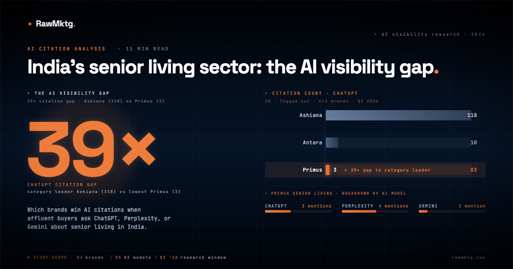
A 39× ChatGPT citation gap, a 7.8× traffic gap, and one brand being misclassified by AI at the moment of highest buyer intent.
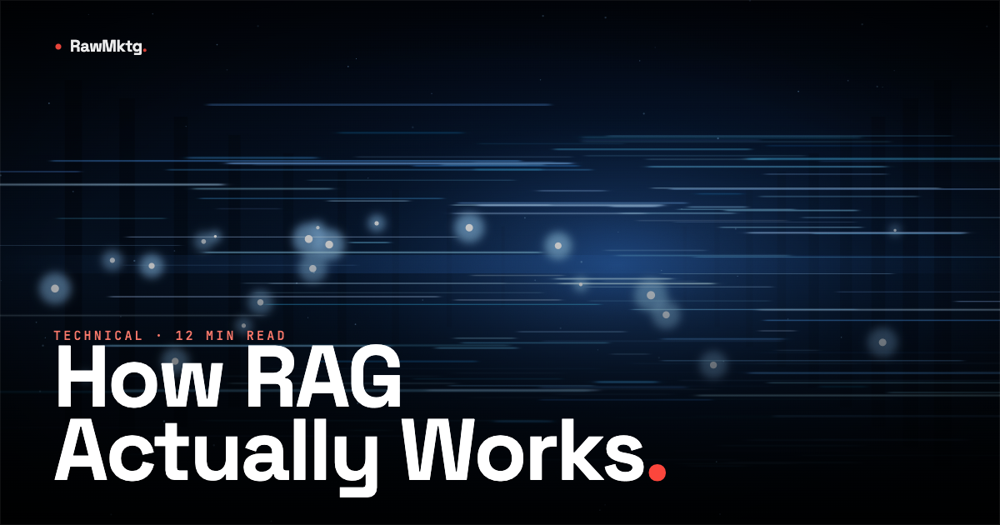
The five-stage AI search pipeline, what the Princeton/Georgia Tech GEO research actually shows, and a three-phase action plan for B2B marketers.
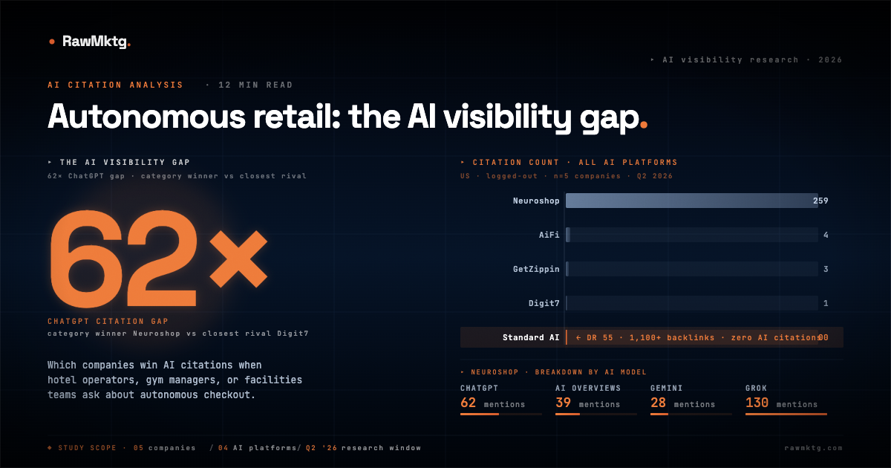
A DR 16 company has more AI citations than the entire established tier combined. How a $74B market is being shaped by whoever shows up in Google and ChatGPT.
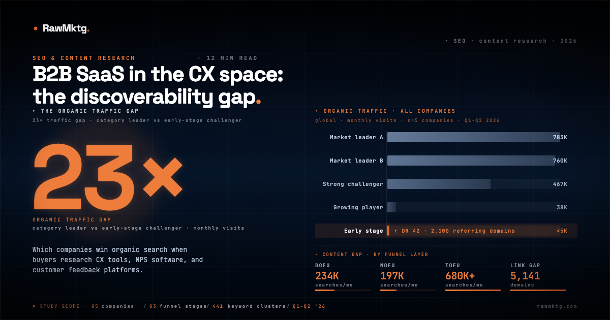
A 150× traffic gap, 5,141 missing referring domains, and an AI visibility moat nobody is building. Six findings from the CX SaaS space.
A 60× AI citation gap, a carrier-page strategy most players have missed, and a DR spread of 28–72. Seven findings from the data.